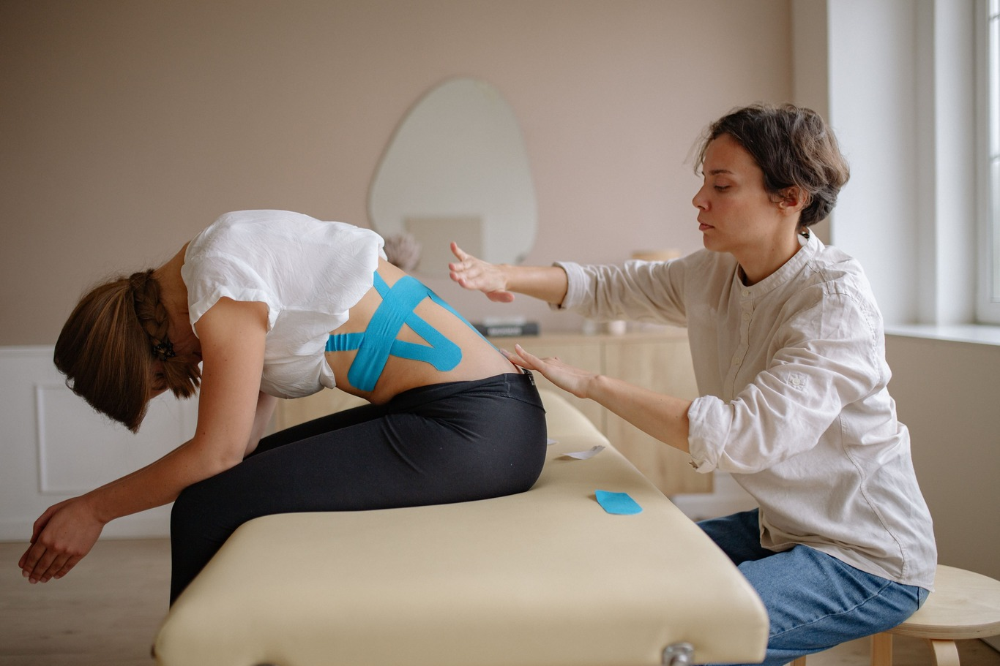

KINESIOLOGÍA
Esta disciplina evalúa el tono muscular y los movimientos de la persona, con el objetivo de identificar en qué zona del cuerpo se encuentra el problema que produce un desequilibrio al paciente, influyendo negativamente sobre su bienestar físico o emocional.
Para ello se utiliza un test muscular que valora la calidad de respuesta de los distintos músculos. Así, a través de este examen nuestros expertos detectan las áreas disfuncionales y las consecuencias que tiene esto sobre la salud del paciente.
